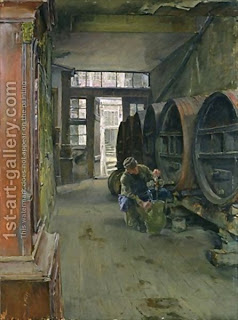

Pesachim 41 - Mustard
One should not put flour into a condiment made with vinegar, nor into mustard, which also contains vinegar. Still, if he did put flour in them - he needs to eat it right away. That is because vinegar slows down leavening, so if he eats it before it leavens, he is safe.
However, Rabbi Meir says that it must be burned immediately. Some say this is because Rabbi Meir considers vinegar as helping leavening, not slowing it down. Others, however, say that Rabbi Meir agrees about vinegar slowing down leavening, but he is afraid that if you allow to eat the mixture, then people may be negligent and not eat it soon enough.
Prefiguring later laws of cooking the Passover lamb itself, which will be discussed in totality later, the Talmud gives a few rules here. One should not cook it in water or in any other liquid, but only roast it on fire. However, once it is roasted, he can baste it or eat it with relishes.
Water used by baker, which contains flour, should be poured out onto a sloping surface, for otherwise this water itself may leaven.
Art: In the Vinegar Factory in Hamburg by Gotthardt Kuehl